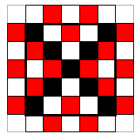

An abstract artist took a wooden 5x5x5 cube and divided each face into unit squares. He painted each square in one of three colours - black, white and red - so that there were no (horizontally or vertically) adjacent squares of the same colour. What is the smallest possible number of squares the artist could have painted black, following this rule? (unit squares which share a side are considered adjacent both when the squares lie on the same face, and when they lie on adjacent faces).
The three unit squares on each vertex of the cube for a loop consisting of 3 adjacent squares - let this be a primary loop. A further 'loop' around these three squares contains 9 adjacent squares - a secondary loop. And a loop around this secondary loop forms a third (tertiary) loop containing 15 adjacent squares.
By considering two sets of primary, secondary and tertiary loops around diagonally opposite vertices of the cube (diagonal through the centre of the cube), and then primary and secondary loops around the remaining 6 vertices, we get a total of 18 non-overlapping loops containing odd numbers of adjacent squares. Since a loop containing an odd number of adjacent squares cannot be painted correctly in only two colours, at least one black square must be present in each loop. Therefore there must be at least 18 black squares on the cube.
Example: Cover the four 'side' faces of the cube in a chessboard arrangement of red and white, then paint the top and bottom faces as shown in the diagram below.
18 squares.